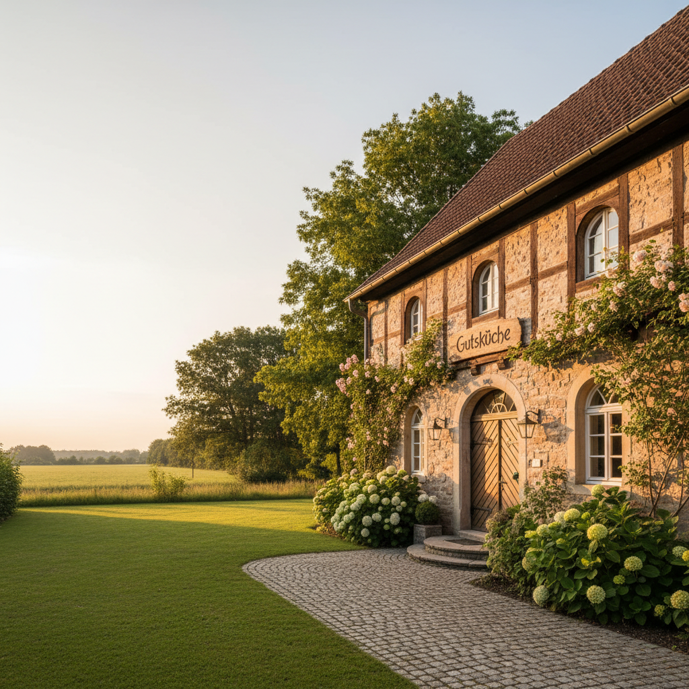
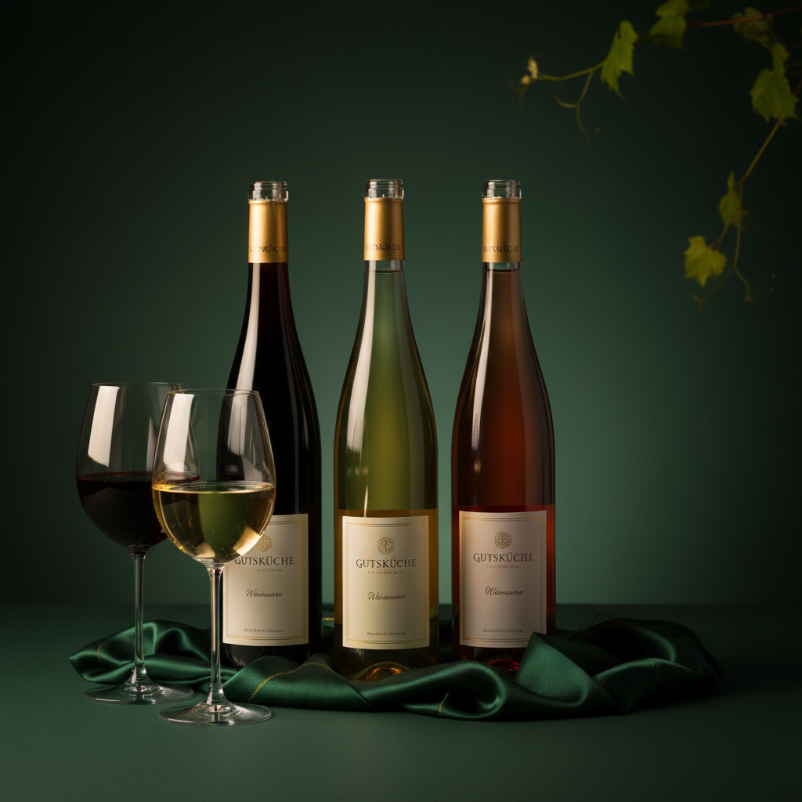
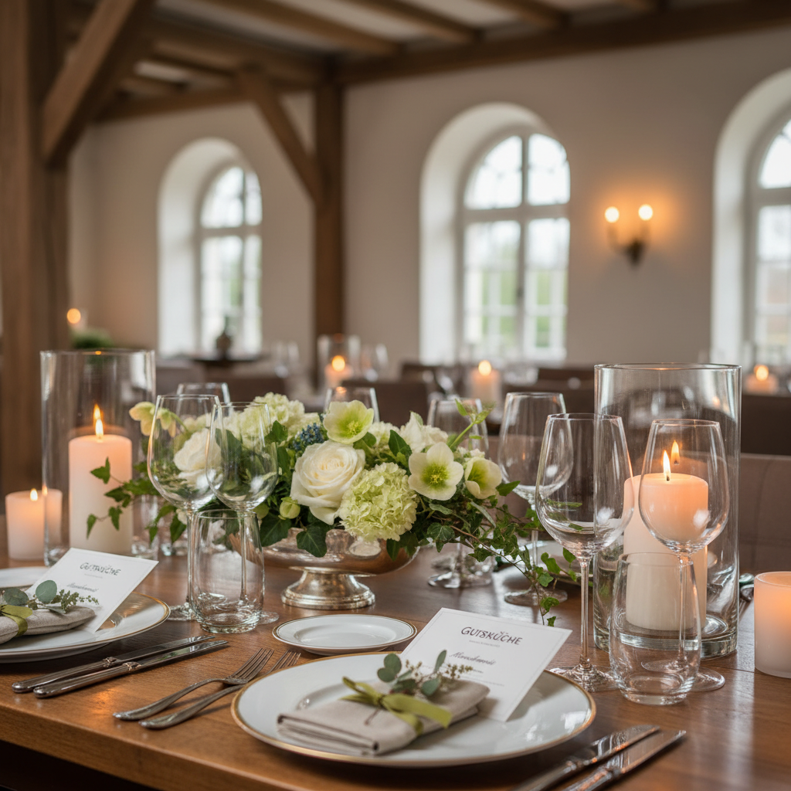

Gutsküche: Wo Geschmack Geschichten erzählt
Erleben Sie puren Genuss und herzliche Gastfreundschaft, inspiriert von heimischer Küchenkultur und erlesenen deutschen Weinen an einem einzigartigen Ort.
Herzlich willkommen in der Gutsküche
In der Gutsküche zelebrieren wir die schönsten Dinge des Lebens: gemeinsame Zeit, puren Geschmack und ehrliche Küche. Wir laden Sie ein zu einem Streifzug durch Töpfe, Pfannen und Gläser, wo jede Zutat eine Geschichte erzählt und jedes Gericht eine Hommage an die heimische Küchenkultur ist.
Unsere Philosophie ist einfach: Handgemachtes Essen, großartige Weine und eine Atmosphäre, die zum Verweilen einlädt. An diesem einzigartigen, historischen Ort verbinden wir überlieferte Rezepte mit frischen Ideen.

Entdecken Sie unsere Genusswelt

Ehrliche Küche mit Herz
Unsere Küche ist ein Spiegelbild unserer Werte: authentisch, saisonal und von Herzen. Wir verarbeiten nur Produkte, deren Herkunft wir kennen und schätzen.
- Regionale Zutaten
- Saisonale Menüs
- Handgemachte Speisen

Ausgewählte Weine & Geschichten
Begleiten Sie Ihr Mahl mit einem unserer erlesenen deutschen Weine. Wir präsentieren Ihnen eine sorgfältig kuratierte Auswahl, die perfekt zu unseren Speisen passt.
- Exquisite deutsche Weine
- Passende Empfehlungen
- Weinbegleitung

Ihr Fest in historischem Ambiente
Die Gutsküche bietet den idealen Rahmen für Ihre besonderen Anlässe. Unser einzigartiger, historischer Ort schafft eine unvergessliche Atmosphäre.
- Einzigartiges Ambiente
- Individuelle Menügestaltung
- Professioneller Service
Ihr Weg zum kulinarischen Erlebnis
Entdecken & Wählen
Stöbern Sie in unserer Speisekarte und lassen Sie sich von unseren Kreationen inspirieren.
Genießen & Erleben
Erleben Sie puren Geschmack und die Leidenschaft, mit der unsere Gerichte zubereitet werden.
Verweilen & Teilen
Nehmen Sie sich Zeit für gemeinsame Momente. Gutes Essen verbindet.
Einblicke in unsere Genusswelt
Bilder sagen mehr als tausend Worte. Entdecken Sie die Atmosphäre und die kulinarischen Kunstwerke der Gutsküche.


Häufig gestellte Fragen
Ja, Sie können ganz bequem über unsere Website einen Tisch reservieren. Wählen Sie einfach Datum, Uhrzeit und Personenzahl aus. Ein Klick auf 'Tisch reservieren' führt Sie zu unserem Kontakt- und Reservierungsformular.
Wir legen Wert auf eine vielfältige Küche. Bitte sprechen Sie unser Servicepersonal an, wir beraten Sie gerne zu vegetarischen und veganen Optionen.
Gerne gestalten wir für Ihre Gruppe oder Feier ein individuelles Menü. Kontaktieren Sie uns für eine persönliche Beratung und Planung.
Ja, Gutscheine für die Gutsküche sind eine wunderbare Geschenkidee. Bitte kontaktieren Sie uns für weitere Informationen zum Erwerb.
Ein Stück Heimat schmecken
Lassen Sie sich von der Gutsküche verzaubern und erleben Sie unvergessliche Momente voller Genuss. Wir freuen uns darauf, Sie bei uns begrüßen zu dürfen.
Jetzt Tisch reservieren